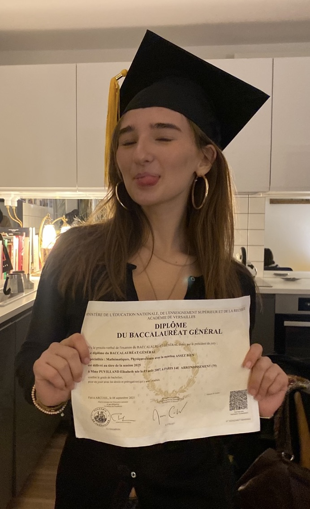

Mes Projets


Découvrez mes créations et mes compétences acquis au cours de cette année en MMI
Découvrir mes projets
Lire mon cvJe m'appelle Elisabeth Puvilland et je suis en premiere année de MMI je souhaiterais me spécialiser en design ux, le design interactif et les expériences immersives. j'aime créer des interfaces esthétique que ce soit dans le cadre scolaire ou pour mon loisir.
Mon objectif avec ces interfaces est de mettre en valeur des marques,rendre plus pratique les sites afin qu'ils soient accessibles et ergonomique
Grâce à mes compétences en HTML, CSS, JavaScript et design UX/UI, je réalise des interfaces responsive adaptées aux ordinateurs, tablettes et smartphones.
Je travaille également sur l'optimisation SEO afin de garantir une meilleure visibilité sur les moteurs de recherche.
Mon univers graphique se remarque souvent par une identité visuelle forte. Parallèllemnt je m'interesse aussi beaucoup a la création numérique et artisitque
Ce portfolio présente différents projets réalisés dans les domaines dudéveloppement front-end, du design et de la creation numérique.
HTML5 / CSS3 / JavaScript / React
Figma / UI Design
Optimisation technique et référencement naturel
Disponible pour desstages ou alternances.
Me contacter